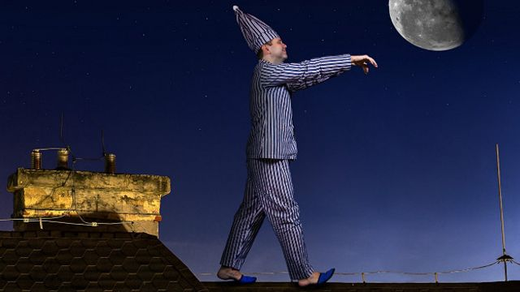

Интересные факты про лунатиков

Правильнее называть это явление – сомнамбулизм, оно произошло от латинских слов сон – somnus и хожу – ambulo.
А слово "лунатик" происходит от латинского lunaticus — безумный, а вовсе не от слова Луна.
Сомнамбулизм нередко связывают с воздействием Луны на человека, оттуда и название «лунатизм».
Но научно доказанных подтверждений этому нет. «Человек, сам того не ведая, очень зависит от энергии Луны,
особенно это касается полнолуния и перигея — точки, в которой Луна максимально приближена к Земле.
Снохождение возникает обычно во время неполного пробуждения от глубокой фазы медленного сна, при этом мозг
пребывает в состоянии полусна-полубодрствования. Глаза лунатика обычно открыты. Раннее считалось,
что лунатик (сомнамбула) смотрит сон и делает то, что ему снится, но исследования этого не подтвердили.
В этот период человек находится в состоянии измененного сознания, похожего на гипнотическое.
Оно проявляется снижением или отсутствием кожной чувствительности, усилением возбудимости некоторых
органов чувств и восприимчивостью субъекта к внушению. Около 40 % лунатиков из-за не контролированных
действий во сне наносят себе физические повреждения различной степени. Около 2 % всех людей периодически ходят во сне.
У детей снохождение встречается достаточно часто, но с возрастом обычно проходит.
Как и ночные страхи, эпизоды снохождения чаще случаются у них в периоды напряжения и тревоги,
при этом психически дети совершенно здоровы. У взрослых снохождение требует более серьёзного внимания.
Причинами его могут быть стресс, тревога, иногда эпилепсия. Сексомния — расстройство психики, при котором человек
во время сна занимается сексом или проявляет другую сексуальную активность. Сексомния считается вариацией лунатизма.
В средневековье болезнь лунатизм тщательно скрывалась от общественности, родственники и близкие больного опасались
гонений со стороны инквизиции. Существовавшая инструкция «Молот ведьм», рассматривала лунатиков,
как одержимых нечистой силой, и рекомендовала казнить их огнем или утоплением. Целый ряд разнообразных экспериментов,
проводившийся над людьми, страдающими лунатизмом, показал, что данная болезнь генетически обусловлена.
То есть если у вас в роду быи лунатики, то и вы можете стать сомнамбулой.